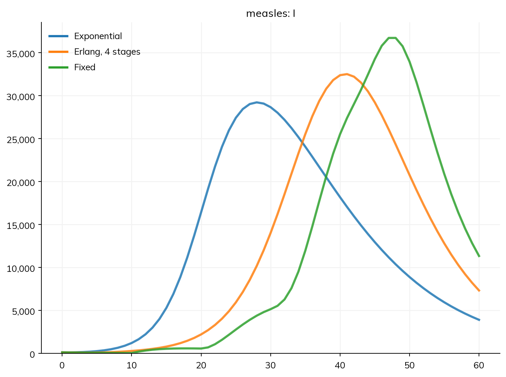
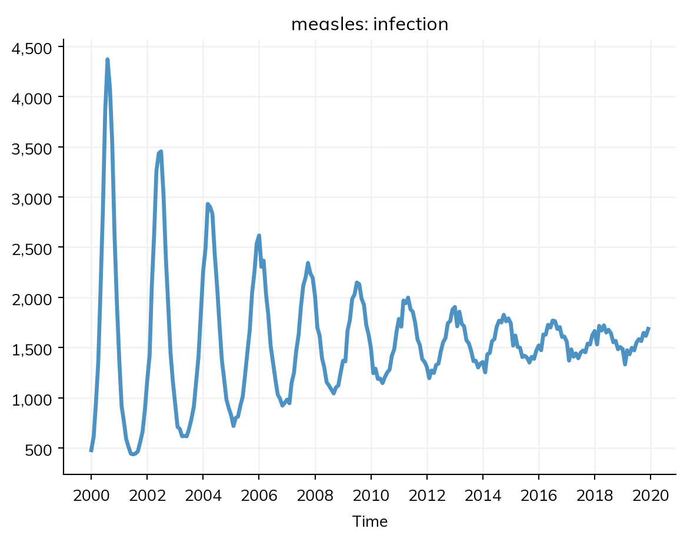
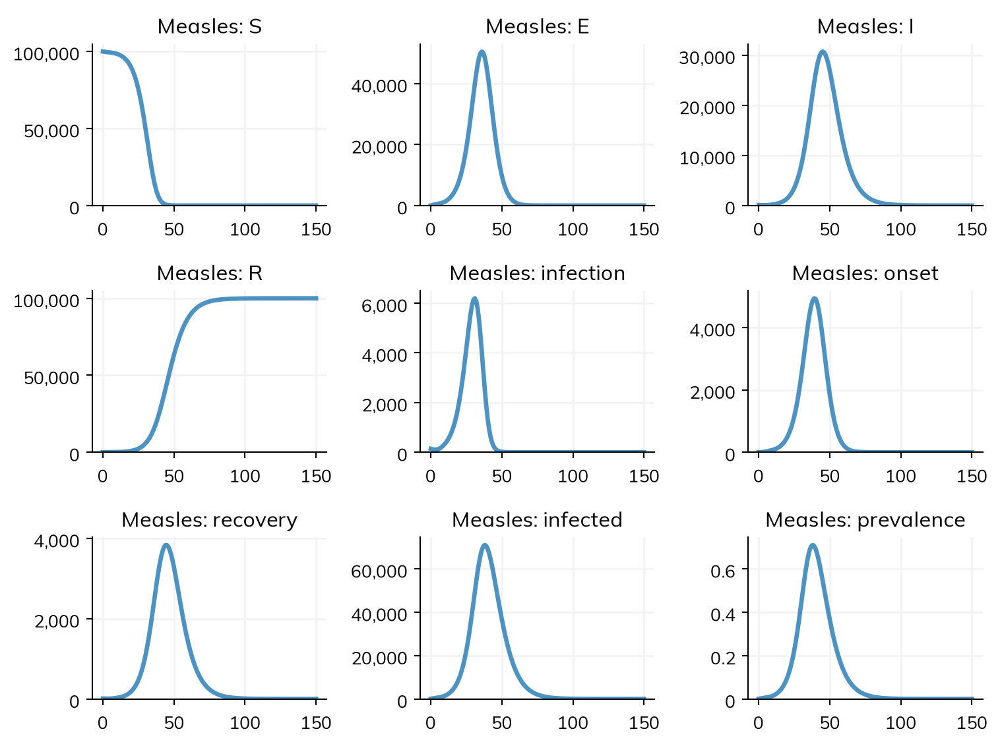
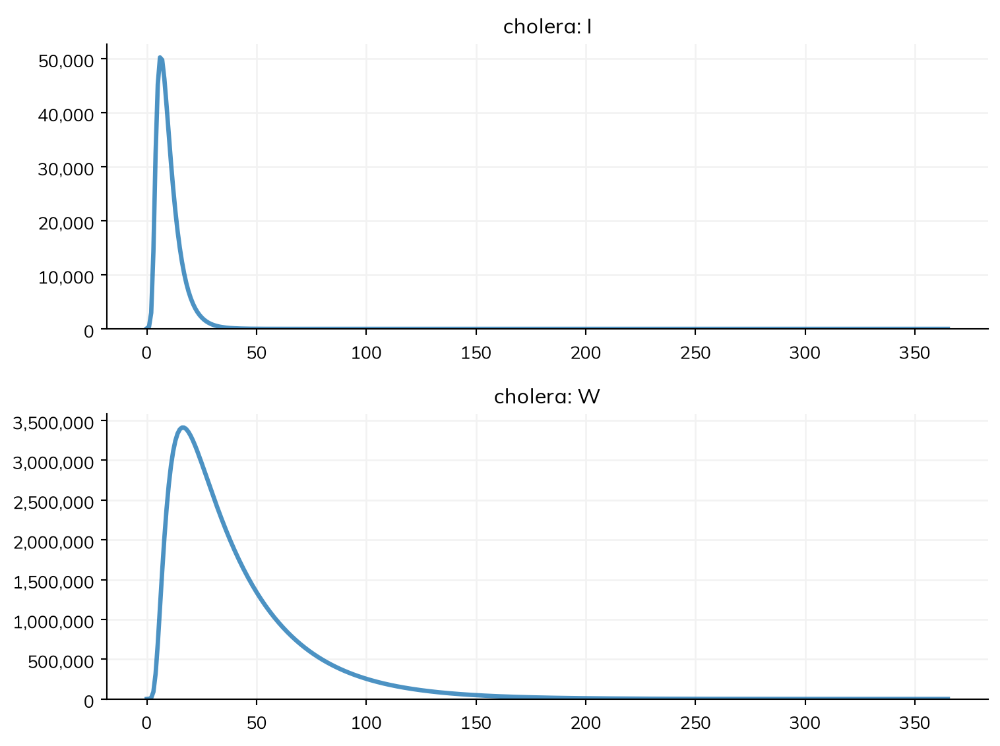
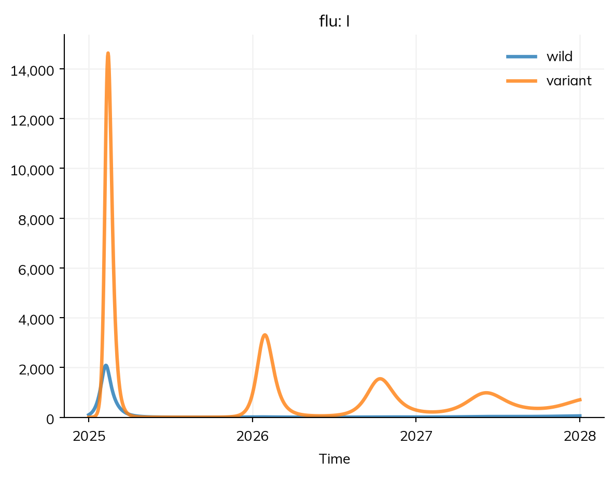

A disease in Starsim is declared the way a compartmental model is drawn: as states (the compartments) and the transitions between them (the flows), each driven by a rate or a duration. It runs as a compartmental model or as agents, unchanged. For a step-by-step introduction, see T2 – Building a model and T3 – Building a disease; for the syntax itself, see Writing models.
Most diseases need only the first sections:
Transmission: who infects whom, and how susceptibility and infectiousness differ by state
import starsim as ssS, I, R = ss.states('S I R')infection = S >> I @1.9*I # From S to I, at a rate of 1.9 per day times the fraction infectiousrecovery = I >> R @ ss.days(8) # From I to R, after 8 days on averagemeasles = ss.Disease(infection, recovery, init_prev=0.001)measles.equations()
dS/dt = -beta * S * I / N
dI/dt = beta * S * I / N - I / dur_I
dR/dt = I / dur_I
library(starsim)states("S I R")measles <-Disease(infection =Transition(S, I, rate =1.9* I), # From S to I, at a rate of 1.9 per day times the fraction infectiousrecovery =Transition(I, R, dur =days(8)), # From I to R, after 8 days on averageinit_prev =0.001)measles$equations()
S, I, R = ss.State(name='S'), ss.State(name='I'), ss.State(name='R')infection = ss.Transition(source=S, dest=I, rate=ss.perday(1.9)*I, name='infection') # From S to I, at a rate of 1.9 per day times the fraction infectiousrecovery = ss.Transition(source=I, dest=R, dur=ss.expon(mean=ss.days(8)), name='recovery') # From I to R, after an exponentially distributed time of 8 days on averagemeasles_explicit = ss.Disease(transitions=[infection, recovery], init_prev=0.001, name='measles')measles_explicit.equations()
dS/dt = -beta * S * I / N
dI/dt = beta * S * I / N - I / mean(dur_I)
dR/dt = I / mean(dur_I)
ss.states() makes the states, named in one string. A transition is written source >> destination @ driver: “S goes to I at 1.9 times I”. What follows @ is one of:
a rate, per person in the source state per unit of time, such as ss.perday(0.125), or an expression of states and parameters, such as 1.9*I;
a duration, such as ss.days(8): the average time people spend in the source state before they take this transition. A duration of 8 days and a rate of 1/8 per day are the same transition.
The operators are a short way to write ss.Transition() (the “Explicit” tab; every form is in Writing models). A bare number in a rate is in the sim’s unit of time, here days (Time). Names come from the variables or keywords, and so do the results (sim.results.measles.infection); What Starsim names and fills in lists the names and values Starsim fills in itself.
Transmission
The textbook SIR model, with frequency-dependent transmission, is
dS/dt = −β S I / N
dI/dt = β S I / N − γ I
dR/dt = γ I
Each transition in Starsim has a rate per person in its source, so the rate of S >> I is the force of infection, λ = β I / N, not the flow β S I / N. There are three ways to write it, and each says something different about who meets whom:
Rate
Read as
Force of infection
beta*I
contact with the people in I
well mixed, β I / N; with a contact matrix or a network, from whom each person meets, with β per contact
beta*I.frac
the fraction of people in I
β I / N, of everyone (in a model with places, in the same place); with a contact matrix, met by it
beta*I.n
the number of people in I
β I: density-dependent, so R0 grows with the population; with a contact matrix, met by it
With a contact matrix by age, beta*I is β Σ_j C_ij I_j / N_j (as from a contact survey), beta*I.frac is β Σ_j C_ij I_j / N, and beta*I.n is β Σ_j C_ij I_j. On a network only beta*I can be used; a sim with a network refuses the other two. beta*I is the usual form, since β stays the rate per contact however people mix. Any of the three is a transmission, with coefficient beta.
A rate is read as it is written: only a state on its own means contact. ss.states('S I R', include_sum=True) also makes N = S + I + R, so beta*I/N is the same as beta*I.frac, and a rate written as the whole flow is divided by its source (beta*S*I/N is beta*I.frac, and beta*S*I is beta*I.n).
Several sources of infection are a sum: in S >> E @ beta*(I + 0.5*A), people in A are half as infectious as those in I. A rate is linear in its bare states; anything nonlinear is written with counts (I.n). A set of states is written with + or |: (E | I).frac is the fraction in either, and (E | I) >> R a transition from either.
Infected states and prevalence. A disease with transmission has the results infected (the number in its infected states) and prevalence (their fraction of everyone in its states). The infected states are those people are infected into and those that infect them (E and I in S >> E @ beta*I), and are what a test detects and a treatment cures; infected = E + I + H on the disease adds others, such as a hospital stage.
Susceptibility and infectiousness. A state can make the people in it less susceptible, or less infectious, than others, with rel_sus and rel_trans. Here people vaccinated against measles (V) are 97% protected, and 90% start vaccinated:
S, I, R = ss.states('S I R')V = ss.State(rel_sus=0.03) # Vaccinated: 3% as susceptible as othersinfection = S + V >> I @1.9*Irecovery = I >> R @ ss.days(8)measles = ss.Disease(infection, recovery, init=dict(V=0.9, I=0.0001))sim = ss.Sim(measles, total_pop=100_000, stop=ss.days(365), verbose=0)sim.run()print('Infections in a year:', round(sim.results.measles.infection.sum()))
Infections in a year: 14834
states("S I R")V <- ss$State(rel_sus =0.03) # Vaccinated: 3% as susceptible as othersmeasles <-Disease(infection =Transition(S + V, I, rate =1.9* I),recovery =Transition(I, R, dur =days(8)),init =list(V =0.9, I =0.0001))sim <-Sim(measles, total_pop =100000, stop =days(365), verbose =0)sim$run()cat("Infections in a year:", round(sum(sim$results$measles$infection$values)), "\n")
S, I, R = ss.State(name='S'), ss.State(name='I'), ss.State(name='R')V = ss.State(name='V', rel_sus=0.03) # Vaccinated: 3% as susceptible as othersmeasles_explicit = ss.Disease( ss.Transition(source=[S, V], dest=I, rate=1.9*I, name='infection'), # From either S or V ss.Transition(source=I, dest=R, dur=ss.days(8), name='recovery'),init=dict(V=0.9, I=0.0001),name='measles',)sim_explicit = ss.Sim(measles_explicit, total_pop=100_000, stop=ss.days(365), verbose=0)sim_explicit.run()print('Infections in a year:', round(sim_explicit.results.measles.infection.sum()))
Infections in a year: 14834
S + V >> I is one transition from either state. Each person also has their own rel_sus and rel_trans, which interventions and connectors change: a vaccine lowers the rel_sus of those who get it (Products), and ss.modify(hiv.rel_sus, ...) can make one disease change the risk of another (Connectors). These act on the transitions that are an acquisition of the disease: every transmission, and any other transition out of the first state if the disease has no transmission (appendix).
Other transitions
Anything that is not transmission is a rate per person, or a duration:
After @
Means
Example
a duration
the mean time in the source state
I >> R @ ss.days(8)
a distribution of durations
the time in the source state, with that distribution
I >> R @ ss.erlang(k=4, mean=ss.days(8))
a rate, or a bare number
a rate per person per unit of time
R >> S @ ss.peryear(0.1), R >> S @ 0.1
a probability per period
the chance of moving in each period, as a rate
I >> R @ ss.prob(0.12, 'day')
an expression of counts
a rate that depends on how many people are in each state
S >> I @ beta*W.n/(W.n + K)
a function of the sim
a rate worked out at each step
S >> I @ my_rate
a trigger, when= or @ ss.on()
a move as soon as a condition holds, or when an event happens to the person (as agents)
U >> A @ ss.on(ss.person.age >= 15)
Transitions out of the same state that are driven by rates compete: the total rate of leaving is their sum, and each takes its fraction of those who leave, on average whatever the order they are written in. How a step resolves this under each solver, and the few places where order does decide, are in From declaration to run.
A trigger has no rate: people move in the step its condition first holds for them, or in which its event (a transition, X.enter, X.exit) happened to them; see ss.on. Here people become sexually active (A) at 15; the “Explicit” tab does the same with a function given to the sim as an intervention:
U, A = ss.states('U A') # Not yet sexually active, and activedebut = U >> A @ ss.on(ss.person.age >=15) # As soon as they are 15sexual = ss.Disease(debut, name='sexual')demog = [ss.Births(birth_rate=ss.peryear(0.03)), ss.Deaths(death_rate=ss.peryear(0.01))]sim = ss.Sim(sexual, demographics=demog, n_agents=5000, start=2000, stop=2010, dt=ss.months(1), verbose=0)sim.run()res = sim.results.sexualprint('Active after the first step:', res.A[1], '- after 10 years:', res.A[-1])
Active after the first step: 3796.0 - after 10 years: 4177.0
states("U A") # Not yet sexually active, and activedebut <-Transition(U, A, when = ss$on(ss$person$age >=15)) # As soon as they are 15sexual <-Disease(debut)demog <-list(ss$Births(birth_rate = ss$peryear(0.03)), ss$Deaths(death_rate = ss$peryear(0.01)))sim <-Sim(sexual, demographics = demog, n_agents =5000, start =2000, stop =2010, dt = ss$months(1), verbose =0)sim$run()active <- sim$results$sexual$A$valuescat("Active after the first step:", active[2], "- after 10 years:", tail(active, 1), "\n")
U, A = ss.states('U A')sexual_explicit = ss.Disease(U, A, name='sexual') # The states, with no transitionsdefdebut_fn(sim):""" Each step, move everyone in U who is 15 or older to A """ dis = sim.diseases.sexual people = sim.people.auids # Everyone alive ready = people[dis.U[people] & (sim.people.age[people] >=15)] dis.move(ready, dis.A)returndemog = [ss.Births(birth_rate=ss.peryear(0.03)), ss.Deaths(death_rate=ss.peryear(0.01))]sim_explicit = ss.Sim(sexual_explicit, interventions=debut_fn, demographics=demog, n_agents=5000, start=2000, stop=2010, dt=ss.months(1), verbose=0)sim_explicit.run()res_explicit = sim_explicit.results.sexualprint('Active after the first step:', res_explicit.A[1], '- after 10 years:', res_explicit.A[-1])
Active after the first step: 3796.0 - after 10 years: 4177.0
The trigger’s moves are counted in the result debut; the function’s are counted in no flow.
Durations
A single duration is the mean of an exponential distribution, as in an ODE model, which has a lot of spread: with a mean of 10 days, a third of people leave within 4 days. A distribution with less spread can be given instead:
defmake_measles(latent):""" Measles with a latent period: S -> E -> I -> R """ S, E, I, R = ss.states('S E I R') infection = S >> E @1.9*I onset = E >> I @ latent recovery = I >> R @ ss.days(8)return ss.Disease(infection, onset, recovery, init=dict(I=0.001), name='measles')latents = {'Exponential': ss.days(10),'Erlang, 4 stages': ss.erlang(k=4, mean=ss.days(10)),'Fixed': ss.constant(ss.days(10)),}sims = {label: ss.Sim(make_measles(latent), total_pop=100_000, stop=ss.days(60), verbose=0) for label, latent in latents.items()}msim = ss.parallel(sims)msim.plot('measles.I')

make_measles <-function(latent) { # Measles with a latent period: S -> E -> I -> Rstates("S E I R")Disease(infection =Transition(S, E, rate =1.9* I),onset =Transition(E, I, dur = latent),recovery =Transition(I, R, dur =days(8)),init =list(I =0.001),name ="measles" )}latents <-list("Exponential"=days(10),"Erlang, 4 stages"= ss$erlang(k =4, mean =days(10)),"Fixed"= ss$constant(days(10)))sims <-lapply(latents, function(latent) Sim(make_measles(latent), total_pop =100000, stop =days(60), verbose =0))msim <-parallel(sims)msim$plot("measles.I")
The distributions most used for durations are:
Distribution
Use
Example
Exponential
The ODE default; a constant rate of leaving
ss.days(10)
Erlang (a gamma distribution with a whole number of stages, k)
A duration with less spread: the standard deviation is the mean divided by √k
ss.erlang(k=4, mean=ss.days(10))
Fixed
Everyone stays exactly this long, e.g. a reporting delay
ss.constant(ss.days(10))
Lognormal
A duration given by its mean and standard deviation, e.g. from a study
ss.lognormal(mean=ss.days(10), std=ss.days(2))
Any other distribution works too (Distributions). As agents, each person draws their own time. As compartments, Erlang, fixed, and whole-step (ss.choice(a=ss.days([3, 4, 5]), p=[0.2, 0.5, 0.3])) durations run exactly; any other runs as Erlang stages with the same mean and standard deviation, with a note. stages=k on a transition sets the number of stages, under every solver.
Branching
Most people with measles recover, but a small fraction die. Separate transitions with p= are decided when people enter the state, and each can have its own duration. p=None marks the one that takes the rest; leaving p= out of it is an error, unless the others’ p= sum to 1. After @, a dict gives the transition’s keywords:
S, I, R = ss.states('S I R')infection = S >> I @1.9*Irecovery = I >> R @dict(dur=ss.days(8), p=None) # The restdeath = I >> ss.dead @dict(dur=ss.days(8), p=0.002)measles = ss.Disease(infection, recovery, death, init_prev=0.001)sim = ss.Sim(measles, total_pop=100_000, stop=ss.days(50), verbose=0)sim.run()print('Deaths:', round(sim.results.measles.death.sum()))
Deaths: 199
states("S I R")measles <-Disease(infection =Transition(S, I, rate =1.9* I),recovery =Transition(I, R, dur =days(8), p =0.998),death =Transition(I, ss$dead, dur =days(8), p =0.002),init_prev =0.001)sim <-Sim(measles, total_pop =100000, stop =days(50), verbose =0)sim$run()cat("Deaths:", round(sum(sim$results$measles$death$values)), "\n")
One transition with several destinations is decided when people leave: I >> {ss.dead: 0.002, R: None} @ ss.days(8) says that after the infectious period, 0.2% die and the rest (None) recover. Each destination has a result, <transition>.<state> (or .dead). After @, the duration has to be a Starsim value (ss.days(8)), not a bare number. The “Explicit” tab builds the same model with ss.Transition():
The fractions out of one state add up to 1; one of them can be left as None, for the rest. A fraction can vary by age group or in time, like any other value (Parameters).
Outside the model are ss.unborn for births (ss.unborn >> S), ss.dead for deaths (I >> ss.dead), and ss.outside for people who arrive or leave alive, counted as arrivals and emigrants. The dead leave the people, unlike a state D, which would keep them in the denominator of prevalence.
Starting values, births, and deaths
Three options say who is in which state at the start, and everyone not placed elsewhere starts in the first state, usually S:
init_prev= is the fraction of people who start infected. They start in the state that an infection leads to: I in an SIR model, but E in an SEIR model, where nobody is then infectious at the start (a note says so).
init= is the fraction of people who start in each state, e.g. init=dict(I=0.001, R=0.9).
init_n= is a number of people: init_n=10 seeds 10 people as init_prev= does, and init_n=dict(I=10) is the number who start in each state.
If nothing is given, a disease with transmission starts with 1% infected. default_state= says which state is the first, if not S. Values can also be given by group, with ss.by() (Stratification).
Births and deaths are usually given to the sim (Demographics), but can also be declared in a disease: ss.birth(rate=...) with no state is a crude birth rate into the first state (per year, and per 1,000 people if above 1), and ss.death(rate=...) with no state a death rate in every state. ss.birth(S, rate=...) and ss.death(I, rate=...) are rates like any other. Since this model has values in both days and years, β is typed:
S, I, R = ss.states('S I R')measles = ss.Disease(infection= S >> I @ ss.perday(1.9)*I,recovery= I >> R @ ss.days(8),births= ss.birth(S, rate=ss.peryear(0.02)), # 20 births per 1,000 people per yeardeaths= ss.death(rate=ss.peryear(0.02)), # The same death rate, so the population is stableinit=dict(S=0.07, I=0.0001), # The rest start in R, immune)sim = ss.Sim(measles, total_pop=1_000_000, start='2000-01-01', stop='2020-01-01', dt=ss.days(1))sim.run()sim.results.measles.infection.resample('month').plot()
Sim: measles, 1,000,000 people, as an ODE, 2000-01-01 to 2020-01-01
measles: R0 = 15.2 (R = 1.06 at the start, with 7% susceptible), with 100 infectious at the start
Note: the initial value of S in "measles" is kept, and the other 929,900 people start in R, the only state not given one
Done in 0.013 s; measles: 378,033 infections; at most 1,136 infectious, on 2000-09-02

states("S I R")measles <-Disease(infection =Transition(S, I, rate = ss$perday(1.9) * I),recovery =Transition(I, R, dur =days(8)),births = ss$birth(S, rate = ss$peryear(0.02)), # 20 births per 1,000 people per yeardeaths = ss$death(rate = ss$peryear(0.02)), # The same death rate, so the population is stableinit =list(S =0.07, I =0.0001) # The rest start in R, immune)sim <-Sim(measles, total_pop =1000000, start ="2000-01-01", stop ="2020-01-01", dt =days(1))sim$run()sim$results$measles$infection$resample("month")$plot()
ss.SIR, ss.SIS, and ss.SEIR are declared diseases written as classes, with the parameters beta, dur_inf, init_prev, p_death (0 by default), and dur_exp for the SEIR. The “Explicit” tab shows what ss.SIR is:
The library has ready-made models of many diseases (HIV, cholera, Ebola, measles, malaria, TB, and more), most of them declared, as ssl.<Name> after import starsim.library as ssl (Library diseases).
A disease of your own can be a class too, with its states, parameters, and transitions in the class body: the form for a disease that goes into a library, or is made many times with different values:
classMeasles(ss.Disease): S, E, I, R = ss.states('S E I R') beta = ss.par(ss.perday(1.9), bounds=[1, 3], doc='Transmission rate', source='Gives R0 of about 15') infection = S >> E @ beta*I onset = E >> I @ ss.erlang(k=4, mean=ss.days(10)) recovery = I >> R @ ss.days(8)measles =Measles(beta=1.5, init=dict(I=0.001)) # Named "measles", after the classsim = ss.Sim(measles, total_pop=100_000, stop=ss.days(150), verbose=0)sim.run()sim.results.measles.plot()

Starting values can go in the class body too (init = dict(I=0.001)). Every expression in the class body is also a result, unless its name starts with an underscore (_h = ...). For behavior that isn’t a transition, override step(), and call super().step() to run the declared transitions (Custom modules).
Advanced: states that are not people
Bacteria in water, or mosquitoes, are states declared with people=False: counts that are never agents, aren’t in the population, and are used in rates as counts (W.n). Here infectious people shed cholera bacteria into the water (after Codeço, 2001):
beta =0.5# Rate of infection per day at a high concentration of bacteriaK =1e5# Concentration of bacteria (cells/mL) that gives half that ratexi =10# Cells/mL shed per infectious person per dayS, I, R = ss.states('S I R')W = ss.State(people=False) # Bacteria in the water: a count, not peoplecholera = ss.Disease(infection= S >> I @ beta * W.n/(W.n + K),recovery= I >> R @ ss.days(5),shedding= ss.outside >> W @ xi*I.n, # An inflow: the total per daydecay= W >> ss.dead @ ss.days(30), # The mean lifetime in the waterinit=dict(I=0.001),)sim = ss.Sim(cholera, total_pop=100_000, unit='day', stop=365, verbose=0)sim.run()sim.diseases.cholera.plot('I', 'W') # The infectious, and the bacteria in the water

The infection here is spontaneous (no bare state), but still the acquisition of the disease, which a vaccine acts on. A count can weight each person: (ss.by(biting=[0.5, 1, 2])*I).n by how much they are bitten, and I.n_infectious by their rel_trans, so that a treatment that halves infectiousness halves shedding too (xi*I.n_infectious). Weighted counts work under every solver.
Advanced: transmission as code
What an expression can’t say about transmission can be written in Python, without leaving the declared disease:
A rate that is a function, S >> I @ fn, takes any of self (the disease), sim, and uids by name. One without uids runs under every solver; one with uids gives each person their own rate, as agents only. In a class, it can be a method.
The disease’s own transmit() gives who is infected in each step (as agents, their UIDs; as compartments, the number in each group). An override can add to super().transmit() (e.g. imported cases), and is told which transmission, def transmit(self, transition), if there are several. Under the ODE, it is taken once a step.
Advanced: declaring in __init__()
A state or transition that only some versions of the model have is declared in __init__(), with define_states(), define_transitions(), and define_results():
classSIRS(ss.Disease):def__init__(self, waning=None, **kwargs):super().__init__(init=dict(I=0.001), **kwargs) beta = ss.par(ss.perday(0.3))self.define_states(ss.states('S I R'))self.define_transitions(infection=self.S >>self.I @ beta*self.I,recovery=self.I >>self.R @ ss.days(10), )if waning isnotNone: # Immunity wanes only if asked forself.define_transitions(waning=self.R >>self.S @ waning)self.define_results(prevalence=self.I.frac) # A fraction of everyone in the modelfor waning in [None, ss.days(90)]: sim = ss.Sim(SIRS(waning=waning), total_pop=100_000, stop=ss.days(365), verbose=0) sim.run()print('Waning:', waning, '- prevalence after a year:', round(sim.results.sirs.prevalence[-1], 4))
Waning: None - prevalence after a year: 0.0
Waning: days(90) - prevalence after a year: 0.0666
overwrite=True replaces a state or transition already declared. ss.pars(defaults, **kwargs) makes named parameters from a dict of defaults and the values given to __init__() (ss.pars).
Advanced: diseases written as code
A disease that needs what states and transitions can’t say, such as a quantity each person carries that changes continuously (a CD4 count, a viral load), is written as code: a class with arrays for each person and methods that update them, which runs as agents beside declared diseases. ss.Disease is the base for a disease with no transmission, and ss.AgentDisease for a transmitted one: it adds the states susceptible and infected, each agent’s rel_sus and rel_trans, seeding, the results prevalence and infection, and transmission over the sim’s networks with a beta for each. ssl.AgentSIR and ssl.AgentSEIR are complete examples, and good bases for your own. The methods to fill in are:
Method
What it does
__init__()
Gives the parameters (define_pars()) and states (define_states())
set_prognoses(uids, sources)
What happens to the people just infected; it calls set_infection() and set_progression(), which can be overridden one at a time
Moves people between the disease’s own states each step, before transmission
on_death(uids)
Clears the states of people who died
transmissibility(), susceptibility(), transmit()
Who can transmit, who can be infected, and who is infected; override rarely
route_betas()
The beta of each network and direction, e.g. by sex: start from super().route_betas()
self.infect(uids) infects people from code. With strains=ss.Strains(...), each person carries one strain at a time (self.strain), strain_value() reads a strain’s values, and infect(uids, strain='b') infects with one. Custom modules covers the parts of a module, and T1 builds a disease among agents.
Advanced: strains
A disease can have several strains that share its states: a person has one course through the states, carrying one strain or more, and each strain has its own multipliers on the transitions and on rel_trans. ss.immunity() gives the protection between them:
S, I, R = ss.states('S I R')strains = ss.Strains( ['wild', 'variant'],rel_trans= [1, 1.5], # The variant is 1.5 times as transmissiblefractions= [0.99, 0.01], # The fraction of each among the first infectionsimmunity= ss.immunity(due_to=R, protection=[[1, 0.5], [0.5, 1]]), # Full protection against the same strain, half against the other)flu = ss.Disease(infection= S >> I @ ss.perday(0.35)*I,recovery= I >> R @ ss.days(4),waning= R >> S @ ss.years(1),init=dict(I=0.001),strains= strains,name='flu',)sim = ss.Sim(flu, total_pop=100_000, start='2025-01-01', stop='2028-01-01', verbose=0).run()sim.results.flu.I.by('strain').plot()

With max_strains=2, people can carry two strains at once, and transmit= says whether a carrier passes on one strain per transmission ('one', the default) or each at its own rate ('each'). A transition with per_strain='each' acts on each strain a person carries, e.g. a cure that clears some strains and not others. res.I.by('strain') counts someone who carries two strains in both columns; res.I.select(strain='A+B') works on the sets carried, each person once. See ss.Strains.
When each strain moves through the states on its own (someone can have CIN from one HPV genotype and be clearing another), make each strain a disease of its own, and connect them with a connector: e.g. ss.modify(den1.rel_sus, multiply=0, who=den2.R & (den2.R.time_in < ss.years(2))) for two years of protection against DENV-1 after recovery from DENV-2, as in ssl.Dengue. A delivery can act on several (disease=[den1, den2]). Protection from each person’s antibody levels against each strain is a connector written as code.
Pitfalls
A bare number after @ is a rate.I >> R @ 8 is a rate of 8 per day, not 8 days; write ss.days(8). Starsim notes a duration shorter than a step, which usually means this mistake.
A rate with no state in it is not transmission.S >> I @ 0.2 infects everyone in S at 0.2 per day whether or not anyone is infectious. Transmission names its source: S >> I @ beta*I.
E | I >> R without brackets is read by Python as E | (I >> R), which raises an error; write (E | I) >> R.
Infecting people by calling set_prognoses(). In an ss.AgentDisease, it only sets what happens to them: they are not counted in the result infection, nor logged. Call self.infect(uids).
EpiModel: compartmental and network disease models in R
Epicookbook: the same textbook models written in several languages
Appendix: every argument of a state
ss.Transition() and its arguments (source, dest, rate, dur, p, stages, who, when, move, increment, min_stay, noise, acquisition, per_strain, name, label) are listed in ss.Transition. ss.State() takes these arguments; ss.states('S I R') makes several states with the defaults. See ss.State.
Argument
What it gives
name
The name; by default, from the keyword or variable
init
The fraction of people who start in the state; for a state that is not people, its starting amount
init_n
The number of people who start in the state, instead
Whether the state holds people (the default), or is a count of something else (people=False: bacteria, mosquitoes)
infected
Whether people in it count as infected (by default, from the transmissions)
rel_sus
A multiplier on the susceptibility of people in the state (e.g. 0.03 for vaccinated people)
rel_trans
A multiplier on the infectiousness of people in the state (e.g. 0.5 for people without symptoms)
keep_time
As agents, keep the time each person entered the state (ti_<name>) for code to read; by default, kept only if the model reads it
label
A human-readable name, for plots
In rates and conditions, a state also gives: .n (the number in it; in the same place, in a model with places), .total (in the whole population), .frac (the fraction in it), .n_infectious (the number weighted by infectiousness), .time_in (the time since each person entered it), .progress (the fraction of each person’s scheduled stay that has passed), and the events .enter and .exit, for when= and ss.on(), with .ever, .n_times, and .since for each person (agents only).